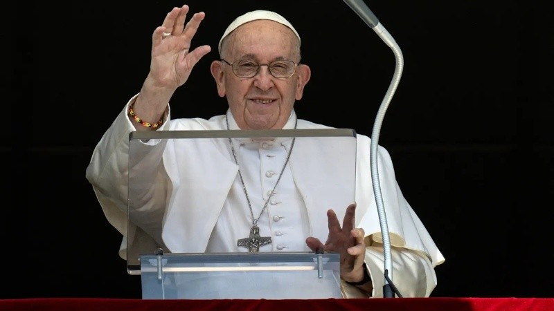

El mensaje de Francisco a Rosario en medio de la ola de violencia de 2024
El Papa grabó sentidas palabras para la ciudad durante los días en que se produjeron los crímenes de trabajadores en la ciudad. La respuesta del intendente Javkin

1 de 1 |
En el marco del fallecimiento del Papa
, en Rosario se recuerda que hace un año, el Sumo Pontífice le dedicó un sentido mensaje durante los días en que la violencia se desplegaba descarnadamente.
En marzo de 2024,
en medio de los días intensos que atravesaba Rosario por la ola de homicidios que incluyeron
matanza de trabajadores,
el Papa grabó un mensaje a la ciudad a través de un video.
Desde el Vaticano, el sumo pontífice pidió “fortalecer la comunidad”, "rehabilitar la política" y avanzar en respuestas “complejas” para que la sociedad vuelva a transitar el camino de paz.
Dijo que es "comprensible la necesidad de la presencia de las fuerzas de seguridad para llevar tranquilidad" y llamó la atención sobre las redes de corrupción que permiten el avance del narcotráfico
En el video, el sumo pontífice sostiene la importancia de encarar la situación con “respuestas complejas e integrales” y reclamó que “sin complicidades de un sector del poder político, policial, judicial,
económico y financiero no sería posible llegar a la situación en la que se encuentra Rosario”.
El mensaje completo del papa Francisco a Rosario
"En un momento de crisis, como los que vive la ciudad de Rosario, comprendemos la necesidad de la presencia de las fuerzas de seguridad para llevar tranquilidad a la comunidad.
No obstante, sabemos que en el camino de la paz se deben transitar respuestas complejas e integrales, con la colaboración de todas las instituciones que conforman la vida de una sociedad.
Es necesario fortalecer la comunidad. Todo Pueblo tiene en sí mismo las herramientas para superar aquello que atenta contra su propia integridad, contra la vida de sus hijos más débiles.
Nadie de buena voluntad puede sentirse excluido ni ser excluido, de la gran tarea de que Rosario sea un lugar en el que todos puedan experimentarse hermanos.
"Sin complicidades de un sector del poder político, policial, judicial, económico y financiero no sería posible llegar a la situación en la que se encuentra la ciudad de Rosario.
Es necesario rehabilitar la política, que «es una altísima vocación, es una de las formas más preciosas de la caridad, porque busca el bien común» (FT 180).
Todos los sectores políticos están llamados a transitar el gran camino del consenso y del diálogo para generar leyes y políticas públicas que acompañen un proceso de recuperación del entramado social.
La alternancia de las gestiones deben sostener la continuidad de los procesos de cambio. Es necesario trabajar no solo sobre la oferta, sino también sobre la demanda de drogas,
a través de políticas de prevención y asistencia.
El silencio del estado en esta materia solo naturaliza y facilita la promoción del consumo y comercialización de las mismas.
"En un contexto como este, es necesario que el sistema democrático vele por la institucionalidad de la Justicia, de tal manera que pueda ser independiente, para investigar los entramados
de la corrupción y del lavado de dinero que facilitan el avance del narcotráfico. Cada miembro del Poder judicial es responsable de custodiar su integridad, la que comienza por la rectitud de su corazón.
Asimismo, es de agradecer a todos aquellos hombres y mujeres que con su compromiso silencioso con la justicia, muchas veces, ponen en riesgo su propia vida por el bien común en un contexto tan deshumanizado.
“El empresario es una figura fundamental de toda buena economía: no hay una buena economía sin un buen empresario.
Lamentablemente, tampoco hay una mala economía sin la complicidad de una parte del sector privado.
Hay una gran tarea por delante en el sector empresarial, no sólo en impedir la complicidad en los negocios con las organizaciones mafiosas, sino también en su compromiso social.
Hay grandes ejemplos de ellos en la vida del empresariado argentino, entre los que se encuentra Enrique Shaw. Nadie se salva solo, aun en los barrios privados,
se puede encontrar la inseguridad y la amenaza del consumo para los propios hijos.
La paz es una empresa que exige de la creatividad y compromiso de todos aquellos que tiene el don de emprender e innovar y ustedes saben como hacerlo. Gracias por ello.
"Dado que, en todo sistema mafioso, los pobres son el material descartable los invito a aunar esfuerzos para que el Estado y las instituciones intermedias puedan brindar espacios comunitarios en los
barrios vulnerables. Los mismos pueden crear condiciones para que los niños, adolescentes y jóvenes tengan un desarrollo humano integral, para un futuro superador al que tuvieron sus padres y abuelos.
Todas las instituciones sociales, civiles y religiosas debemos de estar unidas para hacer lo que mejor sabemos hacer: crear comunidad. Rosario cuenta con una gran riqueza de instituciones al servicio de los demás.
Todos podemos colaborar y ser parte de los espacios deportivos, educativos y comunitarios. El temor siempre aísla y paraliza. No teman comprometerse junto a otros para ser respuesta pacífica e inspiradora.
"La Iglesia como Madre y samaritana siempre es llamada a acompañar espiritual y orgánicamente, a los familiares de las víctimas que han perdido su vida a causa de la violencia,
a los enfermos, a quienes viven el flagelo de las adicciones y a sus familiares, a quienes están presos y luego necesitan un camino de reinserción, a quienes viven en situaciones
de vulnerabilidad extrema. La parroquia es la Iglesia que se hace vecina, es la comunidad donde todos pueden experimentarse amados. Para muchos niños, adolescentes y jóvenes vulnerables
será la única experiencia de familia que tendrán la oportunidad de conocer. En estos tiempos, la caridad será el anuncio más explícito del Evangelio para una sociedad que se siente amenazada.
"La Virgen del Rosario, intercede día y noche por todos sus hijos, sobre todo como suelen hacerlo las madres, con diligencia especial por quienes tienen mayores fragilidades".